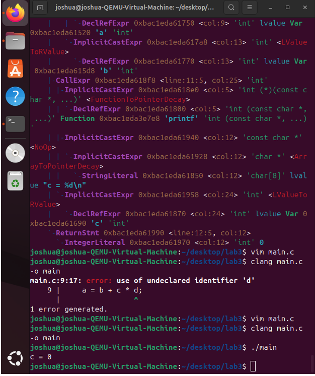
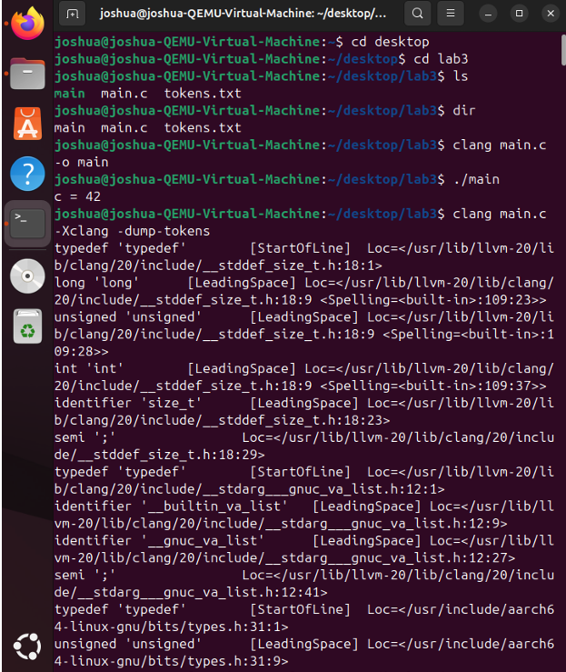
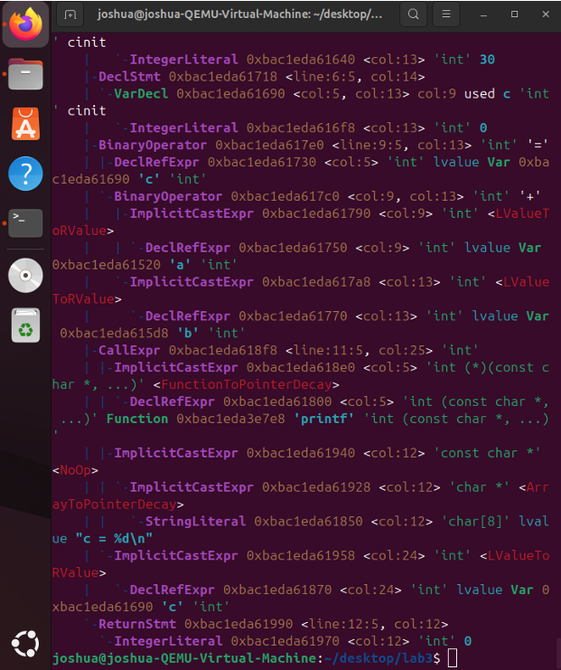
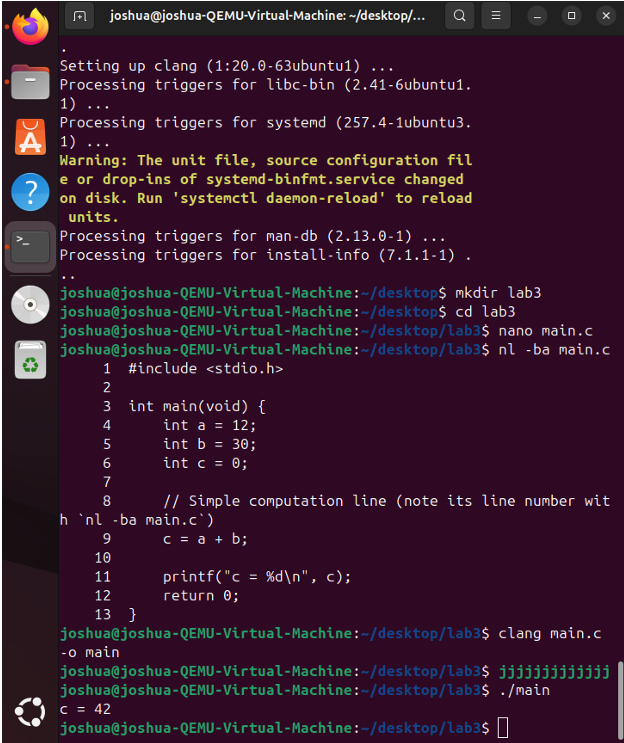

C compilation and syntax tree lab
Overview
In this lab I worked on the command line in Linux (Ubuntu inside QEMU). The goal was to see what the compiler actually does with small C programs before you ever look at machine code. I used Clang to dump tokens, then inspected the abstract syntax tree (AST) so I could tie source lines to structure and to operator precedence.
Tools
Ubuntu in a QEMU VM, Bash, Vim (and nano when it made sense), Clang with LLVM frontend flags, and a short C program built for the lab.
What I did
-
Build and baseline
I wrote a small arithmetic example and compiled it with Clang inside the VM. When something failed, I worked through undeclared identifiers and syntax issues from compiler output until the build was clean.
-
Token dump (lexical view)
I ran Clang with
-Xclang -dump-tokenson the source line I cared about (for examplec = a + b). The dump listed identifiers, operators, and punctuation with source locations so I could confirm the lexer view matched what I typed. -
AST for the assignment expression
For the same line I inspected the AST around
main.cat that line. The tree showed assignment (=) at the top, with the right side forming an addition node whose children were the operands. That matches reading it as assigningcthe value ofa + b. -
Operator precedence
I changed the expression to force precedence, for example
a = b + c * d. In the AST the right-hand side was structured so multiplication grouped under its own node while addition sat higher in the tree. That lines up with multiplication binding tighter than addition, so evaluation behaves likeb + (c * d), not left-to-right guessing.
Screenshots
Terminal captures from the lab in the order I am showing them here.




Takeaway
The lab was not about shipping an app. It was about comfort on Linux, reading toolchain output, and using compiler introspection instead of only staring at source when behavior looks wrong. That habit carries over any time you debug builds, scripts, or services on Unix-like systems.